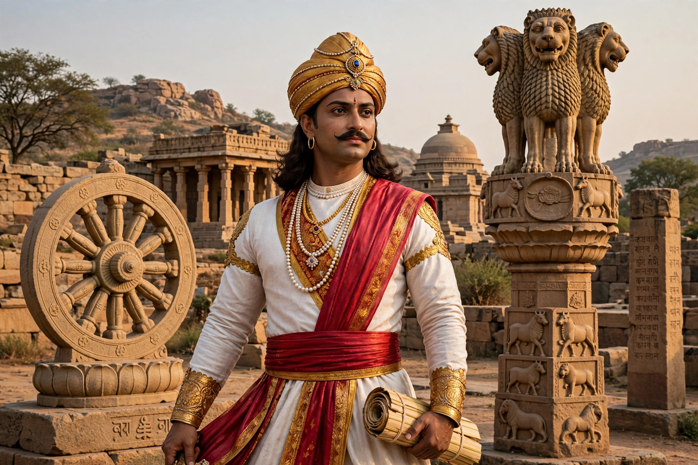

Ashoka, also known as Ashoka the Great, was the third Mauryan emperor of Magadha in the Indian subcontinent, ruling most of it from c. 268 to 232 BCE.
After the bloody conquest of Kalinga (c. 261 BCE), Ashoka embraced Buddhism and promoted dhamma — tolerance, non-violence and welfare — inscribed on pillars and rocks across his empire in Prakrit using Brahmi script and other scripts.
Tradition credits Ashoka with sending missions that spread Buddhism to Sri Lanka — where his son Mahinda is said to have planted a sapling of the Bodhi Tree at Anuradhapura — and Central and Southeast Asia. His lion capital is India's national emblem, and the Ashoka Chakra adorns its flag.